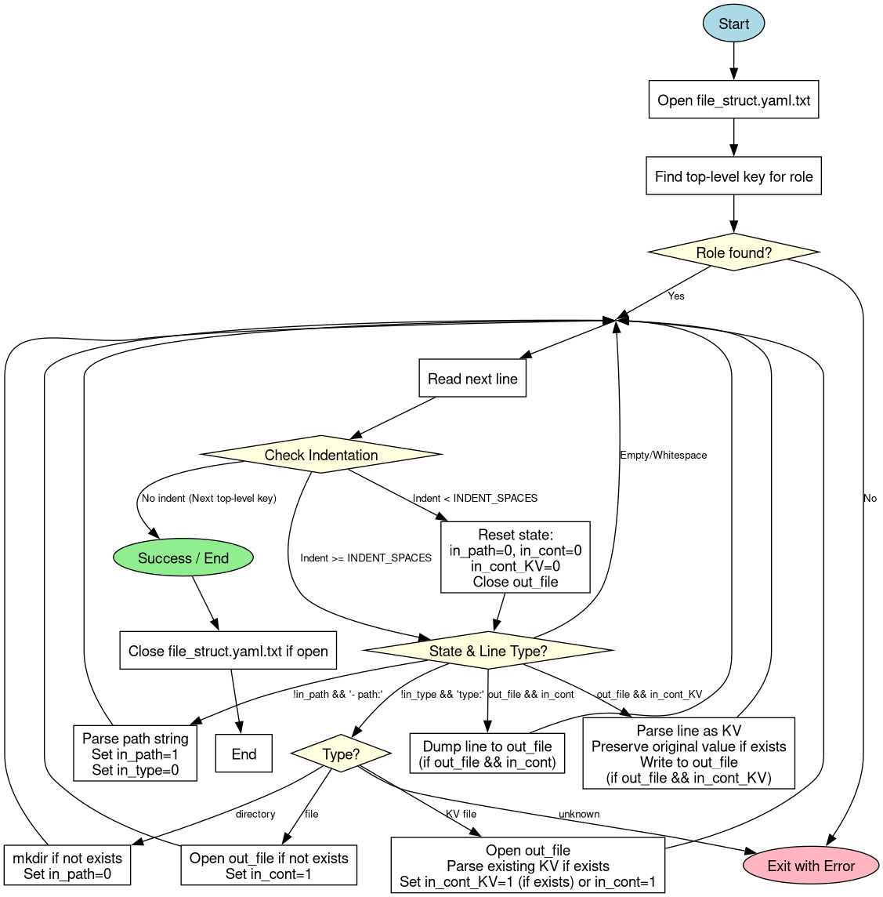
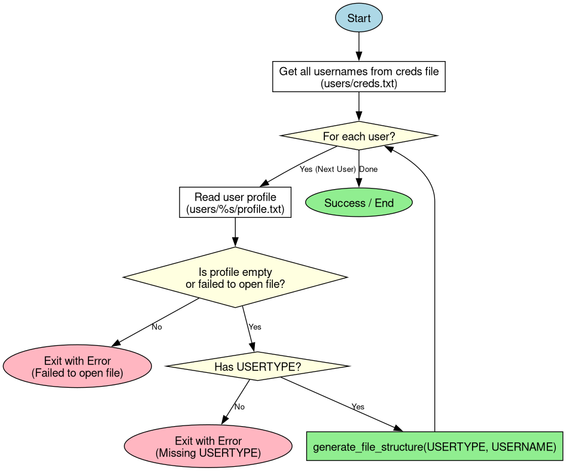

|
Hospital Management System
|
|
Hospital Management System
|
We make use of files and folders to create our "database" (the users/ folder, if you haven't renamed it), which can be described in file_struct.yaml.txt:
this is only intended to aid development and won't actually change where the program looks
But you can freely change the content of KV files, and generate_file_structure() will preserve existing values, while removing fields that aren't in content: .
./users contain folders of usernames, where each stores their own data
YAML format:
In JSON, objects are enclosed with curly braces, but for YAML its indentation.
The top level key, usertype, stores an object that is an array of objects, where each element is denoted as -
The objects in the array must start with path, followed by type, then the content.
So the parsing loop in generate_file_structure() will need to:


One major structure we use is the key=value/key: value format, which we store in the Config data structure.
(or user_login_t if you need hashtable. We use Config here because its gonna be o(n) anyway)
//explain parsing config here
Config editor is used for editing profiles, and managing supplies for Nurses.